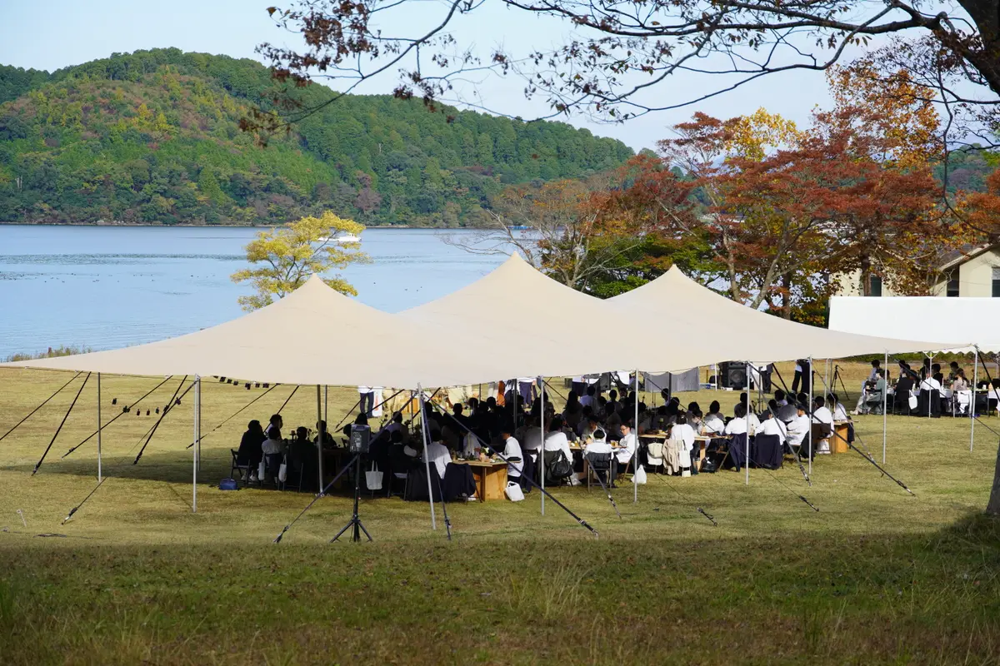
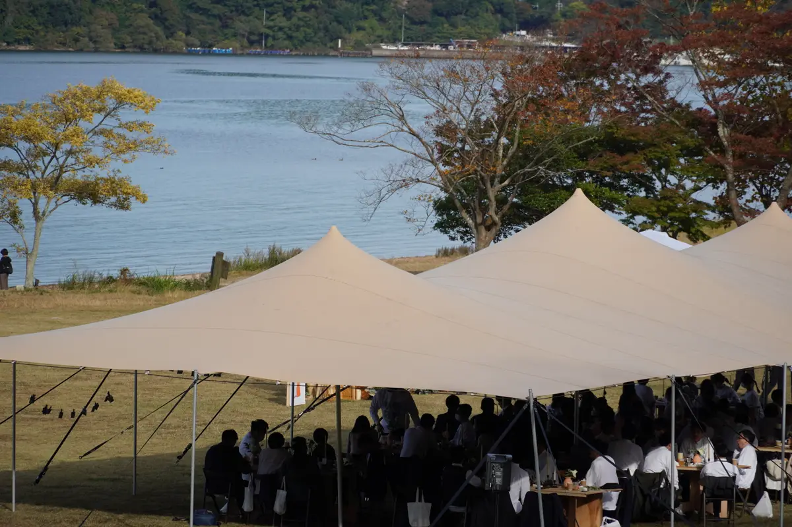
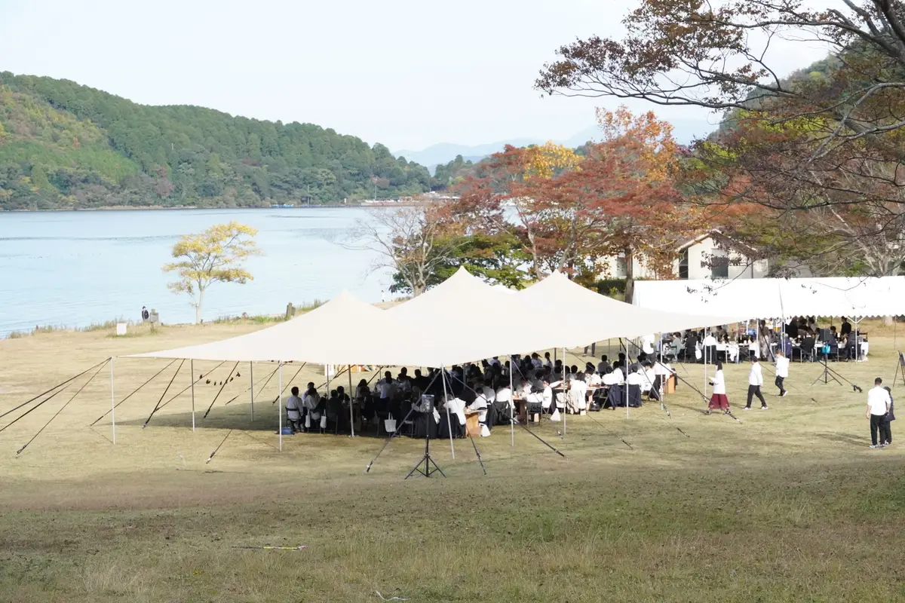
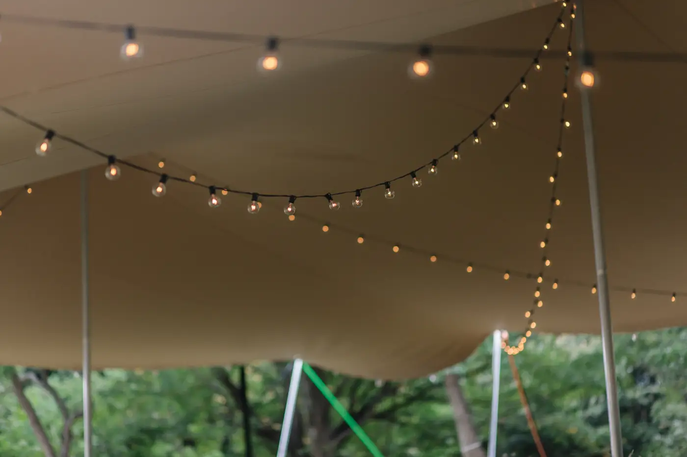
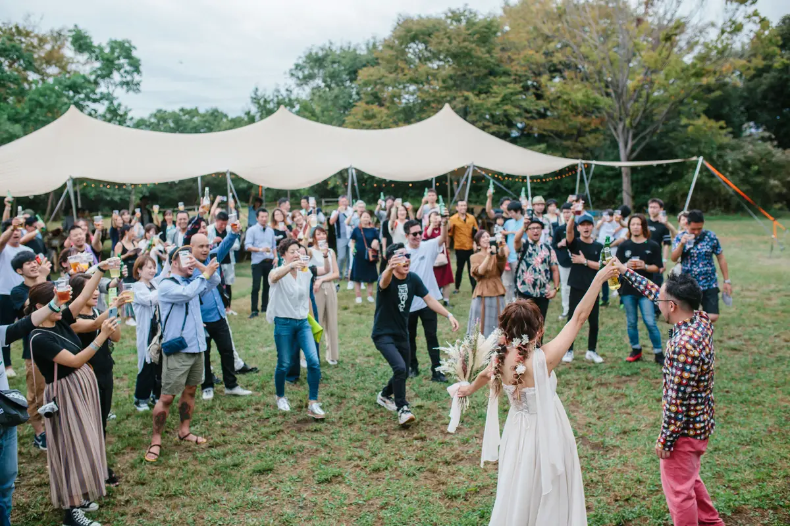
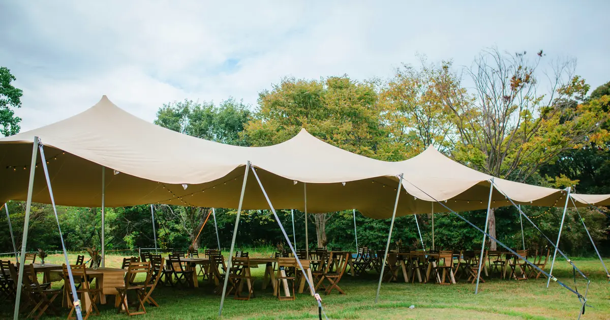
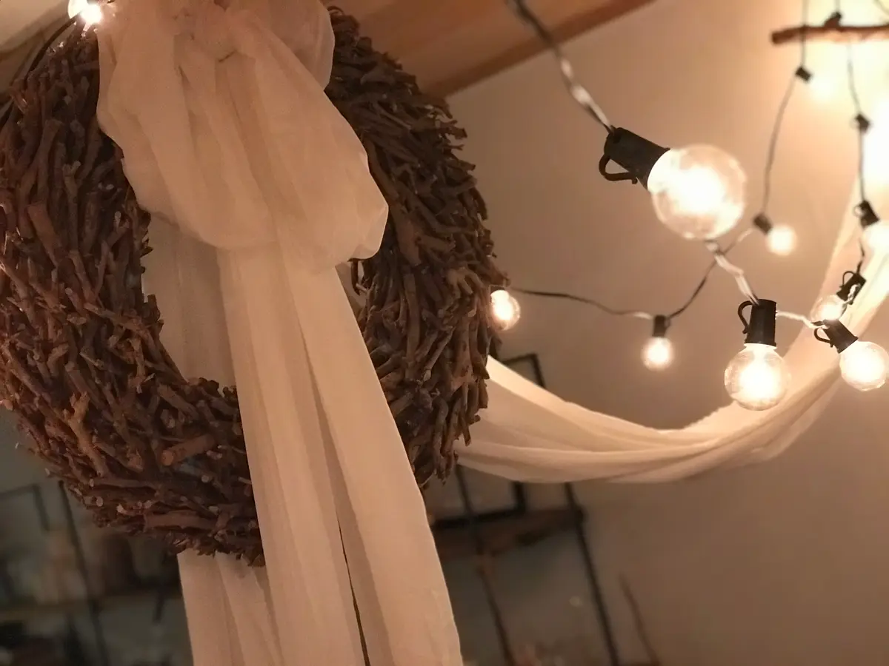
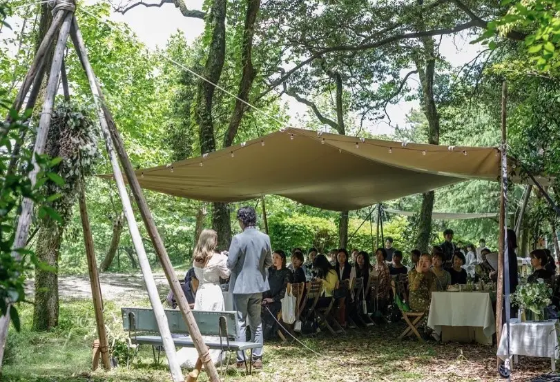
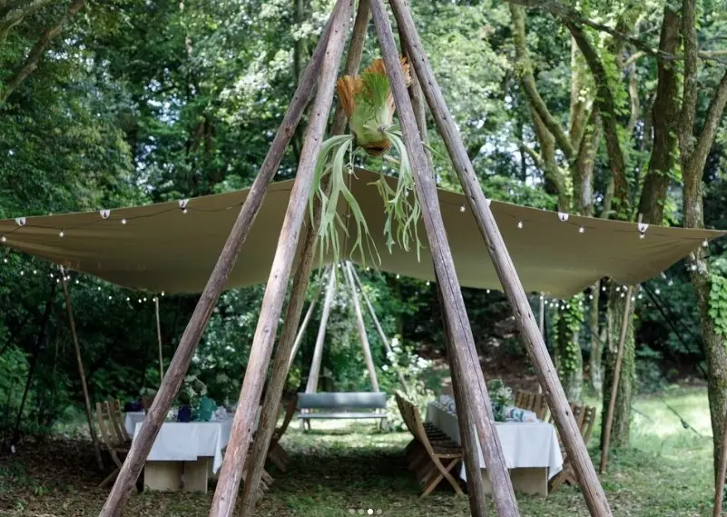
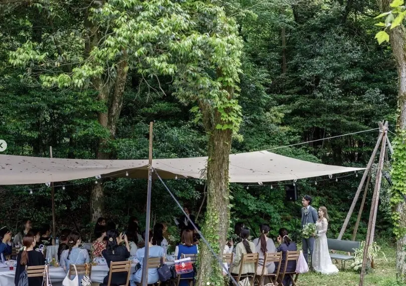

滋賀県・琵琶湖 2021年11月
湖を眺める、秋のガーデン会場。
紅葉の山と湖を背にした芝生に、テントを連ねて大人数のゲスト席をつくりました。景色をさえぎらない曲線の屋根で、湖を眺めながら過ごせる会場に。
OUTDOOR WEDDING
ストレッチテント、椅子、テーブル、照明まで。ウェディングの経験を生かし、屋外で過ごす時間を一つの空間として整えます。
WEDDING DESIGN
VOTREはウェディングの空間づくりを行う会社です。ゲストの視線、移動、食事、写真に残る背景まで考え、屋外会場にふさわしいテントと家具をご提案します。

SCENE
自然光の下でのセレモニーから、照明が灯るディナーまで。曲線的なテントは景色を遮りすぎず、開放感のあるパーティー空間をつくります。
WEDDING WORKS
湖のほとり、森の中、芝生の広場。VOTREがこれまでにお手伝いした、屋外の結婚式の事例です。



滋賀県・琵琶湖 2021年11月
紅葉の山と湖を背にした芝生に、テントを連ねて大人数のゲスト席をつくりました。景色をさえぎらない曲線の屋根で、湖を眺めながら過ごせる会場に。



愛知県名古屋市・大高 120名着席
「ラフに張ってほしい」というご希望に合わせ、L サイズのテントをあえてゆったり張って、やわらかい屋根に。天井にはリースと布、電球を飾り、120名が着席するガーデンパーティーになりました。



愛知県森林公園
木々の間に、丸太を組んだ三脚の柱でテントを張りました。金属の柱を見せず、森の景色にとけこむ、少人数のガーデンウェディングです。
VOTREは、ウェディングの空間づくりから生まれた会社です。会場の下見から、テント・椅子・テーブル・照明の組み合わせまで、ご相談ください。
RENTAL ITEMS
人数と会場に合わせてL・M・Sから選定。
挙式、会食、ラウンジなど用途に合わせて配置。
着席レイアウトや立食パーティーに対応。